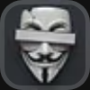
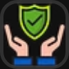

1
Join the Discord 5 min
Hook it up and say hi. That's where people answer when you're stuck at 2am, and where I hang out too.
YOU'RE IN 🎉
Grab a coffee. Here's exactly what to do in your first 30 minutes, so you walk away today with your first real win. No guessing what's next, ever.
The quick tour of everything you just unlocked. Sound on.
Three things. Tick them off as you go, this page remembers.
0 of 3 done
Hook it up and say hi. That's where people answer when you're stuck at 2am, and where I hang out too.
Open Step 2, Full Ethical Hacking 3.0, and do lesson one with your hands on the keyboard. Watching isn't learning, typing is.
HackGrid lab 1 is called "Permission Denied". A real terminal, a real problem, and it feels great when it clicks.
🎉 First win, done. That's further than most people ever get. Come back tomorrow for lesson two, small and often beats one big binge.
Six steps, in order. Each one builds on the last, so you never get lost. It's the same order as the menu on the left.

Start here. 3.0 is the new one.

Do this one early. It keeps you safe while you practice.
Optional. Pick the one that excites you most.
Hit Support in the menu on the left and message me, or ask in the Discord. I read everything. Nobody here was born knowing this, so ask the "dumb" questions too.